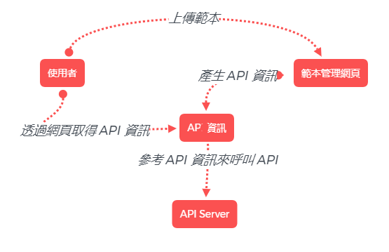

:
:
/lool/mergeodf/api
/lool/mergeodf/yaml
/lool/mergeodf/{doc_id}/api
/lool/mergeodf/{doc_id}/yaml
/lool/mergeodf/{doc_id}/json
/lool/mergeodf/{doc_id}/accessTimes
/lool/mergeodf/{doc_id}
/lool/mergeodf/{doc_id}?outputPDF

檔名
檔案類型